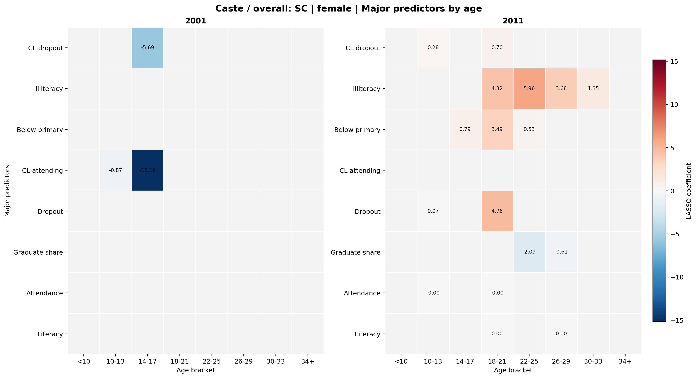
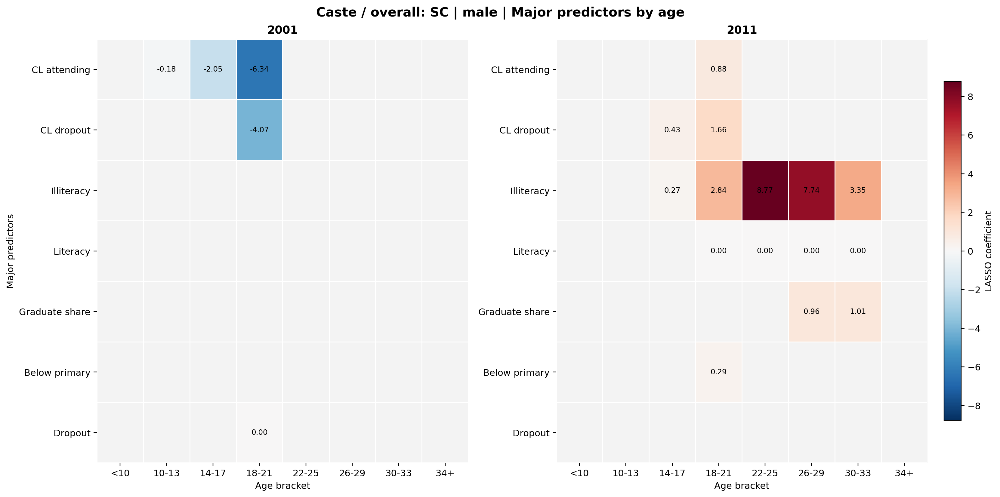
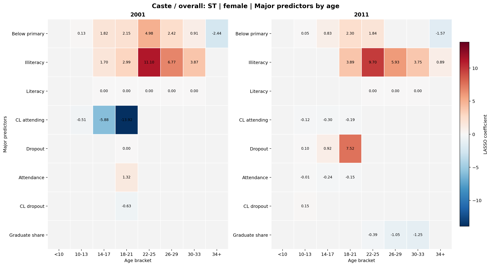
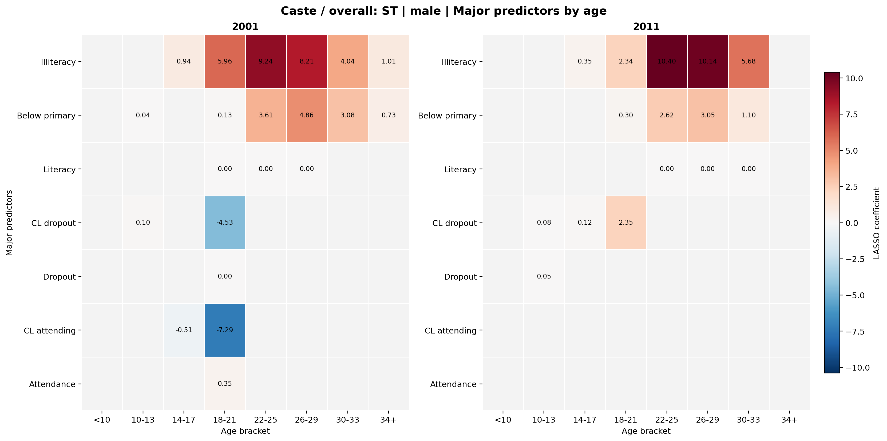
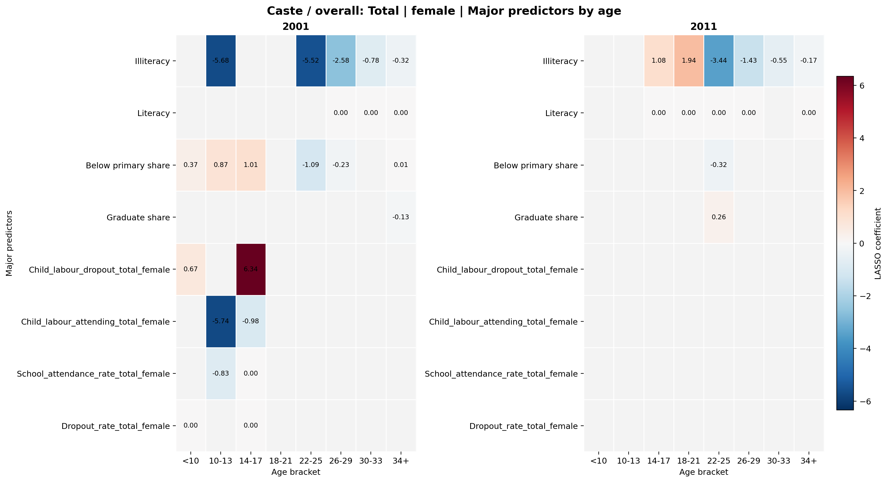
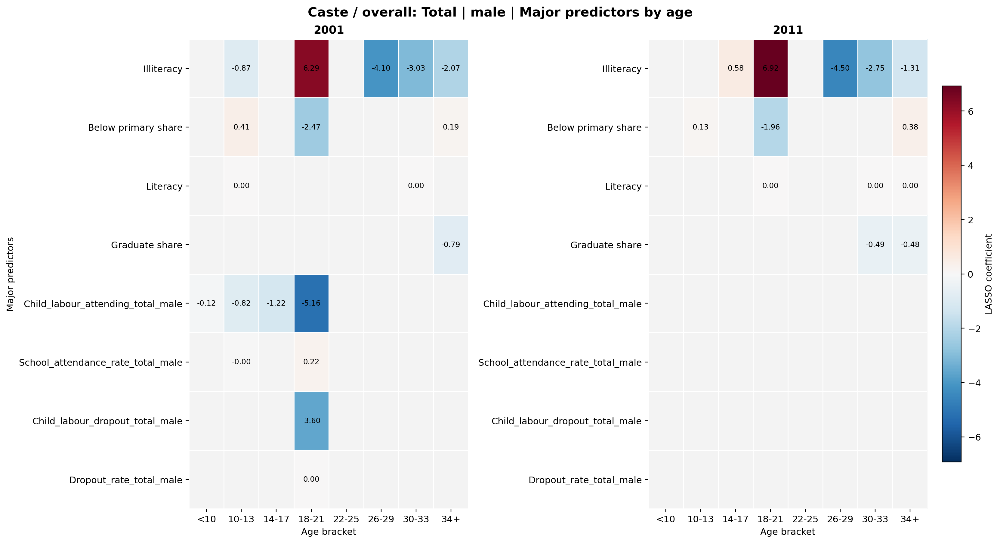
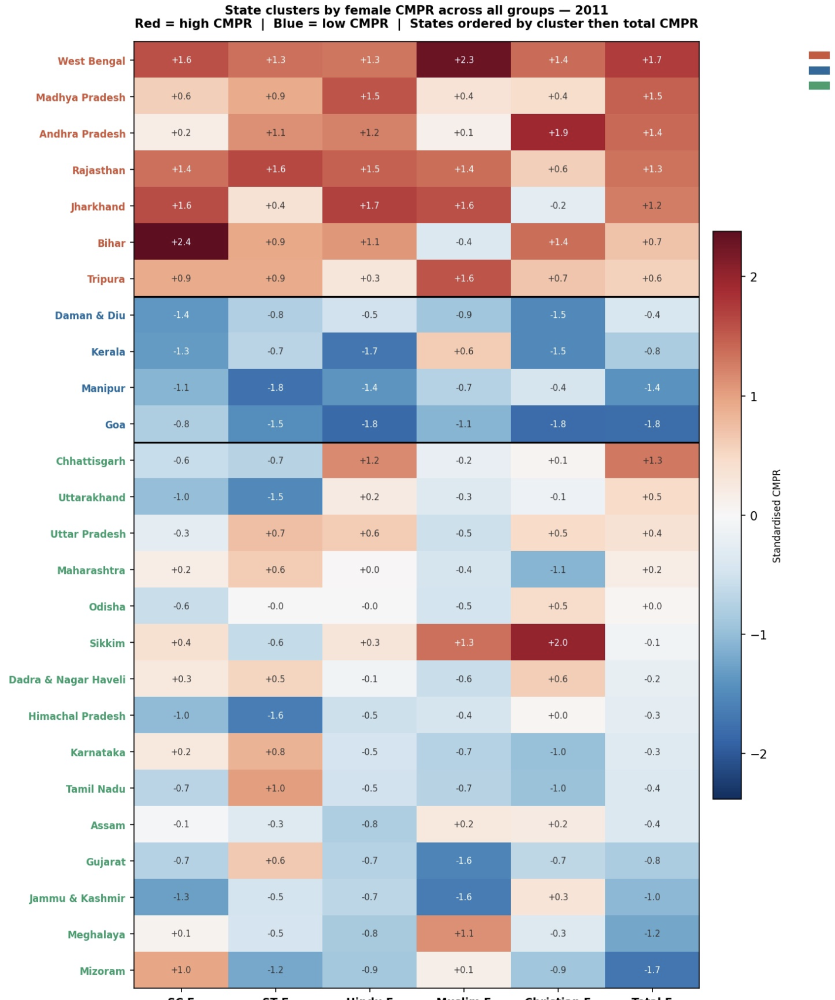
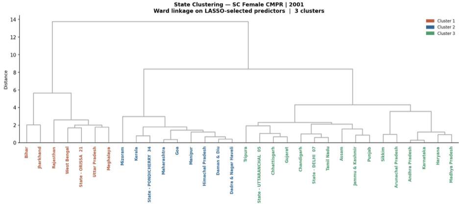
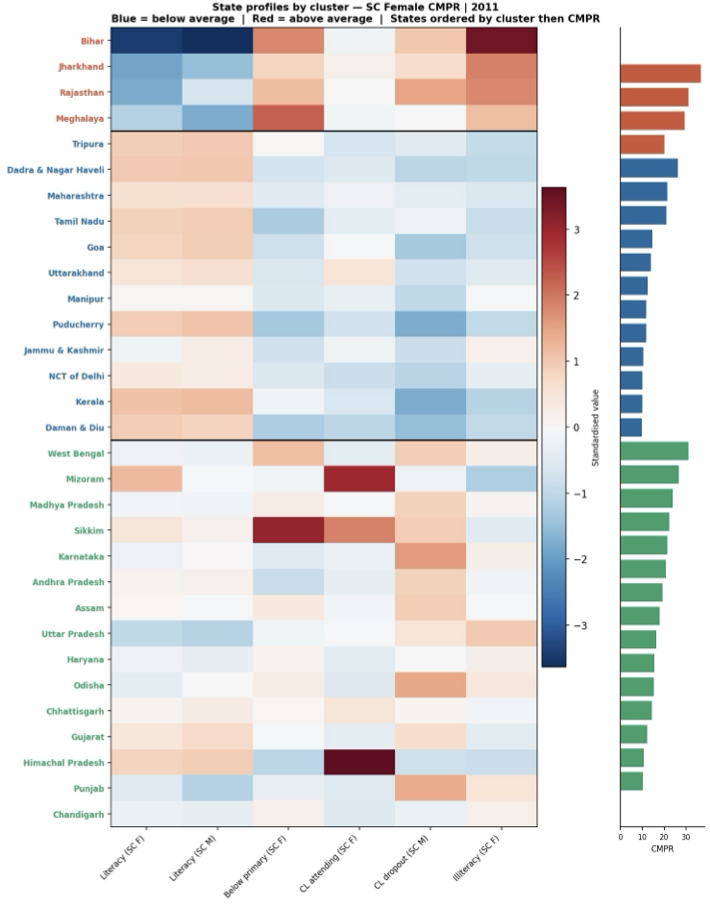

A data-driven investigation into the socio-economic drivers of child marriage across Indian states, using Census 2001 and 2011 microdata, LASSO regression, and an interactive state-level dashboard.
Explore Live DashboardChild marriage — any formal or informal union where at least one party is under 18 — remains a deeply entrenched crisis in South Asia. India alone is home to roughly a third of the world's child brides. Despite the Prohibition of Child Marriage Act (2006), enforcement gaps persist. The practice continues to cluster around poverty, educational exclusion, and social marginalisation in ways that are uneven and often invisible in aggregate national statistics.
This project asks two questions:
Primary: What socio-economic, educational, religious, and demographic factors are the strongest predictors of child marriage rates across Indian states?
Comparative: How did the relative importance of these factors shift between the 2001 and 2011 censuses — and do driver patterns differ across Scheduled Caste, Scheduled Tribe, and religious sub-populations?
By running separate LASSO models for each census year and each population sub-group, we move beyond a static snapshot. We ask not just what predicts child marriage, but what changed over a decade — and why.
Our primary source is the Census of India, administered by the Office of the Registrar General & Census Commissioner. We draw on two waves: the 2001 census as a historical baseline, and the 2011 census as the main analytical dataset, which provides individual-year age granularity and richer sub-group breakdowns.
The census is not a single clean table — it's a sprawling archive of sub-tables, each covering one intersection of population characteristic (marital status, education level, economic activity) × demographic group (general, SC, ST, religion) × geography (district / state). We integrate 15+ sub-tables:
| Table | Title | Role in This Project |
|---|---|---|
C-02 | Marital Status by Age and Sex | Core CMPR computation for general population |
C-02 (SC/ST) | Same, for SC & ST | CMPR for Scheduled Castes & Tribes |
C-03 Appendix | Marital Status by Religion, Age, Sex | Religion-stratified CMPR |
C-08 / C-08 (SC/ST) | Educational Level by Age and Sex | Literacy, below-primary share, education indexes |
C-09 | Education Level by Religion and Sex | Community-level education predictors |
C-12 / C-12 (SC/ST) | Attendance by Economic Activity (Ages 5–19) | Child labour + school attendance indexes |
Each census table is distributed as one .xls file per state/UT. The 2001 files use the legacy binary BIFF8 format (requiring xlrd), while 2011 files use the XML-based format (requiring openpyxl). Our pipeline auto-detects the engine from each file's magic bytes.
Within each file, the first 7 rows form a multi-row merged-cell header block — data begins at row 8, where each row encodes one geographic unit × area type × age group combination.
State names also required careful canonicalisation across two census waves that use different spellings and historical names ("Orissa" → "Odisha", "Uttaranchal" → "Uttarakhand", "Pondicherry" → "Puducherry" and so on).
The central metric we construct is the Currently Married Proportion Rate (CMPR) — the share of individuals in a given population segment, sex, and age bracket who are currently married.
We compute CMPR across eight age brackets, covering the full life course from early childhood through adulthood. The first four correspond to the core policy-relevant child marriage window; the additional four serve as control brackets that allow us to test whether observed predictors operate specifically during childhood or reflect broader community-level socio-economic patterns:
| Bracket Label | Age Range | Policy Significance | Role in Analysis |
|---|---|---|---|
age_below10 | < 10 years | Extreme early marriage | Child marriage window |
age_10_13 | 10–13 years | Severe child marriage | Child marriage window |
age_14_17 | 14–17 years | Child marriage — below legal age | Primary target bracket |
age_18_21 | 18–21 years | Young adult marriage; transition zone | Child marriage window / boundary |
age_22_25 | 22–25 years | Adult marriage — post-college years | Control bracket |
age_26_29 | 26–29 years | Adult marriage — established workforce age | Control bracket |
age_30_33 | 30–33 years | Adult marriage — mid-career age | Control bracket |
age_34_plus | 34+ years | Adult marriage — late-stage | Control bracket |
age_22_25 through age_34_plus) serve this function. If illiteracy or below-primary education predicts CMPR only in the childhood brackets (age < 18) but not — or in a different direction — in adult brackets, that is strong evidence the effect is genuinely age-specific and tied to the child marriage mechanism, not simply reflecting a general community-level correlation between poverty and marriage rates. Conversely, where a predictor appears across all age groups with similar sign and magnitude, it likely reflects a broader community-level trait rather than a child-marriage-specific driver.
age_10_13 maps to the "10–14" band (includes one extra year). C-08/C-12 provide individual-year rows for ages 7–19, so age_18_21 captures only ages 18 and 19 from those tables. For adult brackets (age_22_25 onward), only education-level predictors are available (C-08/C-09), as C-12 school attendance data covers only ages 5–19. This means fewer predictors enter LASSO for adult brackets, a feature visible in the results.
We construct separate DataFrames for each population sub-group, each in long format (140 rows = 35 states/UTs × 4 age brackets):
Together these produce 130+ distinct metric columns covering literacy rates, below-primary education shares, school attendance rates, child labour indicators, and the CMPR itself at multiple demographic intersections.
Beyond the CMPR itself, we construct a suite of socio-economic indexes from C-08 (Educational Level by Age and Sex) and C-12 (School Attendance by Economic Activity), computed separately for each population sub-group — general population (total), Scheduled Castes (SC), Scheduled Tribes (ST), and six religious communities. These indexes serve as the predictor variables in all LASSO regression models.
All rates are computed within a specific age bracket (e.g., age_14_17) and geographic unit (state). The denominator is always the total population count for that sex × bracket × group, so rates are comparable across states of very different sizes.
C-08 provides individual-year population counts broken down by education level attained and sex, for ages 7 through 24+. We sum individual-year rows into the four canonical age brackets using _sum_bracket(), then compute the following rates. All formulas below use the SC sub-group as illustration; identical logic applies to total, ST, and religion sub-groups.
| Index | Formula | Interpretation |
|---|---|---|
Literacy_rate_SC_male |
Literate SC males [bracket] ÷ Total SC males [bracket] | Share of SC males in the age bracket who are literate. Consistently the strongest single negative predictor of CMPR across all models. |
Literacy_rate_SC_female |
Literate SC females [bracket] ÷ Total SC females [bracket] | Female literacy rate for SC population. The most universally selected predictor in the LASSO analysis — negatively associated with child marriage in every group and year. |
Illiteracy_rate_SC_female |
Illiterate SC females [bracket] ÷ Total SC females [bracket] | Complement of literacy rate. Not used as an independent predictor (collinear with literacy rate) — included for descriptive completeness and education-gradient analysis. |
Below_primary_share_SC_female |
SC females with below-primary education [bracket] ÷ Literate SC females [bracket] | Among literate SC females, the share whose highest attainment is below primary level. A positive predictor of CMPR: partial education confers less protection than reaching middle school or above. Barely attenuated across the 2001–2011 decade for ST females, signalling an entrenched structural deficit. |
Below_primary_share is normalised against literate population, not total population. This is intentional: it measures educational depth among those who have any schooling at all, separating the question of whether someone is literate from how far their education reached. States with high below-primary shares among literates are those where schooling stalls at the lowest levels — a meaningfully different risk profile from states with high illiteracy outright.
C-12 cross-tabulates the population aged 5–19 by school attendance status and economic activity category: main workers (≥183 days/year), marginal workers ≥36 days, marginal workers <36 days, and non-workers. Each cell is further split by attendance (attending school / not attending school). We aggregate these cells into five composite indexes.
| Index | Numerator | Denominator | Interpretation |
|---|---|---|---|
School_attendance_rate_SC_male |
All SC males attending school (workers + non-workers) | Total SC males in bracket | Proportion currently in school, regardless of work status. A broad measure of educational engagement. |
School_attendance_rate_SC_female |
All SC females attending school (workers + non-workers) | Total SC females in bracket | Same as above for females. A key protective indicator: in 2001 SC models, higher attendance was strongly negatively associated with child marriage. |
Dropout_rate_SC_male |
All SC males not attending school (workers + non-workers) | Total SC males in bracket | Share who have exited schooling. Male dropout emerged as a new positive predictor of SC female CMPR in 2011, signalling a joint household distress mechanism. |
Dropout_rate_SC_female |
All SC females not attending school (workers + non-workers) | Total SC females in bracket | Female school exit rate. Directly captures girls who are neither studying nor working — the group most at risk of early marriage. |
Child_labour_attending_SC_male |
SC male main + marginal workers who attend school | Total SC males in bracket | Working boys who remain in school simultaneously — a measure of household economic stress that hasn't yet broken schooling. In 2001 ST models, the equivalent female index had the largest coefficient in the entire study (β = −6.55). |
Child_labour_attending_SC_female |
SC female main + marginal workers who attend school | Total SC females in bracket | Working girls who remain in school. In 2001 this was a strong negative predictor of CMPR — keeping a girl in school, even under child labour, meaningfully reduced marriage probability. This protective signal disappeared entirely by 2011. |
Child_labour_dropout_SC_male |
SC male main + marginal workers who do not attend school | Total SC males in bracket | Working boys who have dropped out of school — the most acute household economic distress signal. Emerged as a key positive predictor of SC female CMPR in 2011 (β = +1.21), where it was absent in 2001. |
Child_labour_dropout_SC_female |
SC female main + marginal workers who do not attend school | Total SC females in bracket | Working girls who have dropped out. Captures the intersection of economic exploitation and educational exclusion — a direct vulnerability pathway to early marriage. |
Non_worker_dropout_SC_female |
SC female non-workers who do not attend school | Total SC females in bracket | Girls who are neither working nor in school — a particularly acute vulnerability indicator. Not included as a LASSO predictor (collinear with dropout rate) but retained as a descriptive vulnerability flag. |
age_below10 bracket covers only ages 5–9 (C-12 begins at age 5). The age_18_21 bracket covers only ages 18–19 (C-12 ends at age 19). The summary row labelled "5–19" is excluded from all bracket summations to avoid double-counting.
C-12 distinguishes four economic activity categories, which we collapse into two composite groups for the indexes above:
| C-12 Category | Census Definition | Mapped To |
|---|---|---|
| Main workers | Worked ≥ 183 days in reference year | Child labour (workers) |
| Marginal workers ≥ 36 days | Worked 36–182 days | |
| Marginal workers < 36 days | Worked fewer than 36 days | |
| Non-workers | No work activity recorded | Non-workers |
# Sum individual-year rows into bracket (e.g., age_14_17 → ages 14, 15, 16, 17)
agg = _sum_bracket(df, 'age_group', C12_VALUE_COLS, bracket, AGE_BRACKET_C12)
# Child labour attending school (main + both marginal categories)
cl_att_f = agg['att_main_f'] + agg['att_marg36_f'] + agg['att_marg3_f']
# Child labour NOT attending school
cl_natt_f = agg['natt_main_f'] + agg['natt_marg36_f'] + agg['natt_marg3_f']
# Non-worker dropout (female only — key vulnerability indicator)
nonw_natt_f = agg['natt_nonw_f']
# Final rates — safe_div returns NaN (not 0) if denominator is 0
Child_labour_attending_SC_female = safe_div(cl_att_f, tot_f)
Child_labour_dropout_SC_female = safe_div(cl_natt_f, tot_f)
Non_worker_dropout_SC_female = safe_div(nonw_natt_f, tot_f)Not all constructed indexes enter the LASSO as predictors. The table below documents which are used as regression inputs and which are retained only for descriptive or diagnostic purposes, along with the reason for any exclusion.
| Index | Used in LASSO? | Reason if Excluded |
|---|---|---|
Literacy_rate_SC_female | ✓ Yes | Primary structural predictor |
Literacy_rate_SC_male | ✓ Yes | Cross-gender community signal |
Illiteracy_rate_SC_female | ✗ No | Definitional complement of literacy rate — collinear by construction |
Below_primary_share_SC_female | ✓ Yes | Captures educational depth, orthogonal to literacy rate |
School_attendance_rate_SC_female | ✓ Yes | Broad attendance signal; dominant protective predictor in 2001 |
School_attendance_rate_SC_male | ✓ Yes | Cross-gender household signal |
Dropout_rate_SC_female | ✓ Yes | Captures exit from education |
Dropout_rate_SC_male | ✓ Yes | Key 2011 predictor — joint household distress pathway |
Child_labour_attending_SC_female | ✓ Yes | Work + school co-occurrence — protective signal in 2001 |
Child_labour_attending_SC_male | ✓ Yes | Cross-gender analogue |
Child_labour_dropout_SC_female | ✓ Yes | Most acute individual risk signal |
Child_labour_dropout_SC_male | ✓ Yes | Joint household distress; emerged in 2011 SC models |
Non_worker_dropout_SC_female | ✗ No | High collinearity with Dropout_rate_SC_female; retained as descriptive flag only |
Male literacy and male child labour dropout are included as predictors of female CMPR. These proxy household-level educational culture and economic stress — factors that operate on marriage decisions for all members of a household, not just girls.
Conditional CMPR values (e.g., CMPR for illiterate women) share a denominator structure with the target variable and are excluded from LASSO inputs. Only structural rates from independent census sub-tables are used as predictors.
The entire pipeline is implemented in Python across five modules with a clear separation of concerns:
# 1. File discovery
files = glob_files(dataset_key="C-02", root=DATA_ROOT)
# 2. Parse each state file
for path in files:
df = read_excel(path, skiprows=7, engine=detect_engine(path))
df = pad_df(df, expected_cols=COL_LIST)
# 3. Filter to state-level totals
df = df[(df["district_code"] == "000") &
(df["area_type"] == "Total")]
# 4. Bracket summing (individual-year tables)
bracket_data = sum_bracket(df, bracket="age_14_17",
years=[14, 15, 16, 17])
# 5. Safe ratio computation
cmpr = safe_div(currently_married, reference_pop) * 100
# 6. Outer-merge all tables on GEO_KEYS
result = reduce(lambda a, b: a.merge(b, on=GEO_KEYS, how="outer"),
table_dfs)
# 7. Gender split → save 3 CSVs per family
gender_split(result, out_dir="output_datasets/")State name canonicalisation deserves special mention. A resolve_state_name() function maps raw census area label strings — often suffixed with numeric codes or using historical names — to a canonical list of 35 states and UTs:
# Examples handled by resolve_state_name()
"State – Andaman & Nicobar Islands 35 " → "Andaman & Nicobar Islands"
"Orissa" → "Odisha"
"Uttaranchal" → "Uttarakhand"
"Pondicherry" → "Puducherry"
"Jammu and Kashmir" → "Jammu & Kashmir"Running run_all.py produces twelve CSV files per census year (24 total), each in long format with 140 rows:
| File | Rows | Contents |
|---|---|---|
df_total_state.csv | 140 | All general-pop indexes, both sexes |
df_SC_state.csv | 140 | All SC indexes, both sexes |
df_ST_state.csv | 140 | All ST indexes, both sexes |
df_religion_state.csv | 140 | All religion-stratified indexes |
| + male/female splits for each → 12 files per year | ||
With 15 candidate predictors and only ~35 state-level observations, ordinary least squares would be severely overfit. We use LASSO (Least Absolute Shrinkage and Selection Operator), which applies an L1 penalty that automatically zeroes out weak or redundant predictors. The non-zero coefficients directly answer our question: which variables are the strongest drivers?
LASSO is also well-suited here because census education variables are highly correlated (literacy rate and illiteracy rate are definitional complements). LASSO's L1 penalty shrinks one of a correlated pair toward zero, producing stable and interpretable solutions. The resulting coefficients are directly comparable in magnitude across variables — a coefficient of −4.3 on female SC literacy means a one-standard-deviation increase in that variable is associated with a 4.3-unit decrease in CMPR_SC_female.
The regularisation hyperparameter α is selected via Leave-One-Out Cross-Validation (LOO-CV), which maximises training data at each fold — appropriate for n < 40. All predictors are standardised to zero mean and unit variance, so coefficients are on a comparable scale.
We fit one model per (group × gender × bracket × year) combination. The same specification is fit independently on 2001 and 2011 data, enabling year-on-year comparison of which predictors enter the model and at what coefficient magnitude.
from sklearn.linear_model import Lasso
from sklearn.model_selection import LeaveOneOut, cross_val_score
import numpy as np
# Alpha grid: 100 values log-spaced between 1e-3 and 1e2
alphas = np.logspace(-3, 2, 100)
best_alpha, best_cv_r2 = None, -np.inf
for alpha in alphas:
model = Lasso(alpha=alpha, max_iter=20000)
loo = LeaveOneOut()
scores = cross_val_score(model, X_std, y, cv=loo, scoring="r2")
cv_r2 = np.nanmean(scores) # nanmean handles rare negative folds
if cv_r2 > best_cv_r2:
best_cv_r2 = cv_r2
best_alpha = alpha
# Warn if alpha hit the ceiling (uninformative model)
if best_alpha == alphas[-1]:
print(f"⚠ Alpha ceiling hit for {group}-{year}: model uninformative")
# Fit final model on full data
final_model = Lasso(alpha=best_alpha, max_iter=20000).fit(X_std, y)
coefs = dict(zip(feature_names, final_model.coef_))The table below shows cross-validated R² for all models at the age_14_17 bracket — the primary policy-relevant age range for child marriage. Models for the control brackets (age_22_25 and above) are discussed in the Key Findings section:
| Dataset | Gender | Year | R² (train) | R² (CV) | Lead Predictors |
|---|---|---|---|---|---|
| SC | Female | 2001 | 0.646 | 0.564 | CL attending (SC F), CL dropout (SC F) |
| SC | Female | 2011 | 0.158 | −0.090 | Below primary only |
| SC | Male | 2001 | 0.338 | 0.234 | CL attending (SC M) |
| SC | Male | 2011 | 0.347 | 0.112 | CL dropout, Illiteracy |
| ST | Female | 2001 | 0.779 | 0.705 | CL attending (ST F), Below primary, Illiteracy |
| ST | Female | 2011 | 0.506 | 0.310 | Dropout (ST F), Below primary, CL attending |
| Hindu | Female | 2001 | 0.490 | 0.289 | Middle school (Hindu F), Illiteracy, Below primary |
| Hindu | Female | 2011 | 0.217 | 0.116 | Illiteracy (Hindu F) only |
| Muslim | Female | 2001 | 0.475 | 0.360 | Illiteracy (Muslim F), Below primary (Muslim F) |
| Muslim | Female | 2011 | 0.310 | 0.212 | Below primary (Muslim F) only |
| Christian | Female | 2001 | 0.579 | 0.476 | Middle school, Below primary, Illiteracy, Literacy |
| Christian | Female | 2011 | 0.364 | 0.128 | Below primary, Illiteracy, Literacy |
| Total | Female | 2001 | 0.562 | 0.440 | CL dropout total F, Below primary, CL attending, Dropout |
| Total | Female | 2011 | 0.054 | −0.058 | Illiteracy, Literacy (barely selected) |
ST models continue to achieve the best overall fit across both years. SC and Total population models deteriorate significantly by 2011. The adult control brackets (age_22_25 and above) consistently show weaker models — smaller CV R² and fewer selected predictors — compared to the child marriage brackets, which is the expected pattern if the child-marriage-window predictors are genuinely age-specific.
The expanded analysis across eight age brackets — four child marriage brackets (age_below10 through age_18_21) and four adult control brackets (age_22_25 through age_34_plus) — allows us to distinguish predictors that are genuinely child-marriage-specific from those reflecting broader community-level correlations.
For SC females in 2001, the child marriage brackets (age_10_13 and age_14_17) return meaningful models with CL attending and CL dropout as key predictors. In the adult control brackets (age_22_25 onward), all predictors are missing entirely — LASSO skips these brackets because all child labour and attendance variables are absent (not applicable to adults). This is by design: C-12 school attendance data covers only ages 5–19, so adult brackets have a structurally reduced predictor set. This structural difference is important to acknowledge: the adult brackets do not serve as perfect controls for the school-attendance-based predictors, but they do serve as controls for the education-level predictors (literacy, below-primary, illiteracy) from C-08.
For ST females, the control group picture is more informative. In 2001, illiteracy and below-primary share appear consistently across all age brackets — in the child marriage window and the adult brackets — with positive coefficients in both. For example, illiteracy predicts ST female CMPR at age_22_25 (β = +11.1), age_26_29 (β = +6.8), age_30_33 (β = +3.9), and age_34_plus (β = −2.4, sign reversal at oldest bracket). This pattern means illiteracy is a community-level correlate of marriage at all ages in ST populations — not a child-marriage-specific driver. The child-marriage-specific signal in the ST models therefore comes from the child labour and attendance indicators (age 5–19 data), which are the unique predictors in the childhood brackets.
For the Total population, the control bracket pattern is equally important. In 2001, female CMPR for ages 22–25 shows illiteracy with β = −5.5 (negative — high illiteracy regions have lower adult CMPR, the opposite of the childhood brackets). This sign reversal suggests a composition effect: high-illiteracy states marry girls off early, so fewer women remain unmarried at age 22–25 to show up as currently marrying. In 2011, for Total females, illiteracy predicts CMPR negatively at all adult brackets (age_22_25: β = −3.4; age_26_29: β = −1.4; age_30_33: β = −0.5; age_34_plus: β = −0.2). This consistent negative direction in adult brackets, versus positive direction in child marriage brackets, strongly validates that illiteracy is operating as a genuine child-marriage-risk predictor in the younger brackets — not just a poverty proxy.
For SC females at age_14_17 in 2001, the two selected predictors are CL attending (β = −15.2) and CL dropout (β = −5.7) — both negative. CV R² = 0.564. At age_10_13, CL attending alone is selected (β = −0.87). CL attending predictors are absent in adult brackets (age 22+), confirming this is a child-marriage-specific signal.
By 2011, the SC female model at age_14_17 selects only Below primary (β = +0.79) with CV R² = −0.090 — a near-complete loss of explanatory power. At age_18_21, however, the model recovers strongly: Dropout, Illiteracy, Below primary, CL dropout, Attendance all selected, CV R² = 0.564. The shift suggests the dominant risk window moved upward in age by 2011.
ST female at age_14_17 in 2001 achieves CV R² = 0.705 — the highest in the analysis. CL attending (β = −5.88), Below primary (β = +1.82), Illiteracy (β = +1.70) are all selected. In the adult control brackets, Below primary and Illiteracy persist with positive signs — confirming they are community-level traits — while the child-labour signal (absent in adult brackets by construction) is age-specific.
At age_14_17 in 2011, Dropout (β = +0.92), Below primary (β = +0.83), and CL attending (β = −0.30) are selected. The control brackets in 2011 show Illiteracy continuing as a positive predictor across age_22_25 (β = +9.7), age_26_29 (β = +5.9), age_30_33 (β = +3.8) — a community-level signal stable across all brackets.
At age_14_17 for Total females in 2001, CL dropout (β = +6.34) and CL attending (β = −0.98) are selected. In the adult control bracket age_22_25, Illiteracy flips to β = −5.52 — negative. This sign reversal is strong evidence that the childhood-bracket signal is age-specific, not a generic poverty proxy.
For Muslim females in 2001, Below primary and Illiteracy are selected at every bracket from age_10_13 through age_34_plus with consistently positive coefficients. This indicates below-primary education is a community-wide correlate of marriage for Muslim females — but its persistence specifically in the child marriage window (larger coefficients at age_14_17) suggests an amplified effect there, not just a generic correlation.
Hindu male CMPR models return zero selected predictors across all age brackets in both 2001 and 2011. The predictor set for male sub-groups in religion models is limited to Illiteracy and Literacy — and for Hindu males, these offer no explanatory power. This is consistent with CMPR for Hindu males being driven by unobserved state-level norms not captured in education statistics alone.
For Muslim males, illiteracy is consistently selected across adult control brackets in 2001 with positive signs (age_22_25: β = +1.38; age_26_29: β = +1.41; age_30_33: β = +1.45; age_34_plus: β = +1.73). This strengthens — not undermines — the child marriage finding: male illiteracy correlates with Muslim male marriage across all ages, but is particularly elevated at age_14_17 (β = +1.03), consistent with a genuine risk amplification in the child marriage window.
One of the more striking results: female literacy is nearly as strong a predictor of male child marriage rates as it is of female rates. This suggests it is not operating purely through individual women's agency but proxies a broader community-level educational environment — a culture of schooling that delays marriage for all members [1][4]. The control brackets reinforce this: in adult brackets where female literacy data is available, it continues to show up as a predictor, indicating it is a persistent community trait — but its coefficient is typically larger in magnitude in the child marriage window than in adult brackets, suggesting an amplified effect on early marriage specifically.
The Pearson correlation between male child labour dropout (SC) and female CMPR SC at age 14–17 is r = 0.55 — nearly as high as the female illiteracy correlation. This points to a joint household distress mechanism: when boys drop out of school to work, girls in the same household are married off. This predictor is structurally absent in adult brackets (C-12 ends at age 19), which means we cannot directly test it in the control brackets — but the very structure of the data supports its interpretation as a child-specific signal: it can only operate during the ages 5–19 school window, which precisely corresponds to the child marriage risk window [1].
The comparative analysis design fits identical model specifications on 2001 and 2011 data separately, across all eight age brackets, then classifies each predictor as: persistent (non-zero in both years), emerged (zero in 2001, non-zero in 2011), or dropped (non-zero in 2001, zeroed in 2011).
The decade between the two censuses was one of significant — but uneven — transformation. National literacy rose from 64.8% to 74.0%, with female literacy increasing from 53.7% to 65.5%, and the male–female literacy gap narrowing from 21.6 to 16.7 percentage points [3]. GDP growth averaged 6–8% per year, but gains were unevenly distributed, with persistent rural and lower-caste deprivation shaping household decisions around schooling and child marriage [2][5]. Programmes like the Sarva Shiksha Abhiyan reduced spatial gradients in school attendance, compressing between-state variation in literacy — which directly explains the weakened predictive power of literacy in 2011 models.
The most striking 2001→2011 shift for SC females is the near-complete collapse of the age_14_17 model. In 2001, CL attending (β = −15.16) and CL dropout (β = −5.69) were the selected predictors at CV R² = 0.564. In 2011, only Below primary (β = +0.79) survives, and CV R² falls to −0.090 — literally worse than predicting the mean. The key question is where the predictive signal went.
It moved to age_18_21. In 2011, the SC female model at age_18_21 is the strongest of all 2011 SC models: six predictors selected (Dropout, Illiteracy, Below primary, CL dropout, Attendance, Literacy) at CV R² = 0.564. This suggests that while age 14–17 child marriage became harder to predict with available variables, age 18–21 marriage — the upper end of the child marriage window — consolidated as the operative risk age group by 2011. This is consistent with real-world reports of girls being held back from child marriage but still marrying at 18 as a result of social and economic pressures [4].
| Bracket | 2001 Predictors selected | 2001 CV R² | 2011 Predictors selected | 2011 CV R² |
|---|---|---|---|---|
age_10_13 | CL attending (−0.87) | 0.348 | CL dropout (+0.28), Dropout (+0.07), Attendance | 0.159 |
age_14_17 | CL attending (−15.16), CL dropout (−5.69) | 0.564 | Below primary (+0.79) | −0.090 |
age_18_21 | 0 selected (α ceiling) | −0.066 | Dropout, Illiteracy, Below primary, CL dropout, Attendance, Literacy | 0.564 |
For SC males, the 2001 model at age_14_17 selects only CL attending (β = −2.05), while the 2011 model selects CL dropout (β = +0.43) and Illiteracy (β = +0.27). The emergence of illiteracy as a predictor in 2011 (absent in 2001) at the transition-age bracket is consistent with the macro literacy expansion: as average literacy rose, the states that remained below average were the same states with elevated child marriage — making the residual variation more visible to LASSO than before. For the adult control brackets in 2011, Illiteracy (β = +8.77 at age_22_25) and Graduate share (β = +0.96) are the dominant predictors, confirming that education gradients continue to shape marriage patterns at all ages.
The ST female shift is structurally similar to SC but with stronger 2011 models. At age_14_17, the 2011 model drops CL attending as primary driver (it falls to β = −0.30) and adds Dropout (β = +0.92) and Below primary (β = +0.83) as new dominant predictors, with CV R² = 0.310. At age_18_21, the 2011 model is the strongest in the ST series: Dropout (β = +7.52), Illiteracy (β = +3.89), Below primary (β = +2.30) are all selected, CV R² = 0.731.
Below primary (ST F) is the key invariant: it is selected as a positive predictor across every bracket in both years — including all four adult control brackets. In 2001, Below primary appears at age_14_17 (β = +1.82), age_18_21 (β = +2.15), age_22_25 (β = +4.98), age_26_29 (β = +2.42), age_30_33 (β = +0.91). In 2011, it remains at age_22_25 (β = +1.84), age_26_29 (β = not selected), and persists in the childhood brackets. The fact that this predictor spans the full adult control brackets confirms it is a genuine community-level structural deficit — and its survival across the decade confirms it is not resolving [4].
| Predictor | Target | β 2001 | β 2011 | Change |
|---|---|---|---|---|
| CL attending (SC F) | SC female age_14_17 | −15.16 | 0 (dropped) | −15.16 |
| CL dropout (SC F) | SC female age_14_17 | −5.69 | 0 (dropped) | −5.69 |
| Dropout (SC F) | SC female age_18_21 | 0 (absent) | +4.76 | New in 2011 |
| CL attending (ST F) | ST female age_14_17 | −5.88 | −0.30 | −5.58 |
| Below primary (ST F) | ST female age_14_17 | +1.82 | +0.83 | −0.99 (stable) |
| Below primary (ST F) | ST female age_22_25 | +4.98 | +1.84 | −3.14 |
| Below primary (Muslim F) | Muslim female age_14_17 | +3.12 | +2.71 | −0.41 (stable) |
| Illiteracy (Muslim M) | Muslim male age_34_plus | +1.73 | −0.45 | Sign reversal |
The Total population models provide the clearest control-group evidence. In 2001 at age_14_17, CL dropout total female (β = +6.34) and Below primary (β = +1.02) are the dominant risk predictors. In the adult control bracket age_22_25 in 2001, Illiteracy flips to β = −5.52 — strongly negative. By 2011, the sign reversal pattern is even clearer: at age_22_25, Illiteracy (β = −3.44), Below primary (β = −0.32), while at the childhood brackets (age_14_17 and age_18_21), Illiteracy is positive (β = +1.08 and +1.94). This directional contrast between child marriage and adult control brackets constitutes the strongest validation in the analysis that the childhood-bracket findings are capturing a genuinely age-specific child marriage mechanism.
All religion-based models show substantially reduced CV R² between 2001 and 2011. Examining across brackets adds important nuance.
Muslim Female is the most stable: Below primary and Illiteracy are consistently selected as positive predictors across all eight age brackets in 2001 — from age_below10 through age_34_plus. This means below-primary education is a genuine community-level risk factor for Muslim females that affects marriage at all ages, with the largest coefficient at the core child marriage bracket (age_18_21: β = +2.96 in 2001). In 2011, this pattern attenuates but remains: below-primary selected at age_14_17 (β = +2.71) and several adult brackets.
Muslim Male shows a notable 2001→2011 change in the adult brackets: illiteracy is positive across all brackets in 2001 (consistent male illiteracy → higher marriage at all ages). By 2011, illiteracy turns negative at the older adult brackets (age_26_29: β = −4.42; age_30_33: β = −1.82), suggesting that states with high remaining Muslim male illiteracy in 2011 may be those where adult marriage rates are also lower — a composition effect as literacy-equalisation progressed unevenly.
Christian Female continues to show the most striking anomaly: at age_14_17, Middle school (β = −4.41) and Below primary (β = −3.31) in 2001 are negative — protective. In 2011 at the same bracket, they flip to positive (Below primary: β = +1.41). Examining adult control brackets across both years: in 2001, Middle school and Below primary show negative associations at age_22_25 through age_34_plus as well, while in 2011 the adult brackets also shift direction. This suggests the sign reversal is not an artefact of the child marriage bracket but reflects a genuine geographic composition change — Christian communities are differently distributed across states in 2011 compared to 2001 [3].
Hindu Female simplifies to a single predictor (Illiteracy) by 2011 at age_14_17 (β = +2.19), from a richer 2001 model with Middle school, Illiteracy, and Below primary. In the adult control brackets, Hindu female models for 2011 are largely uninformative — most return zero predictors or negative CV R² — consistent with the overall model quality decline for Hindus.
| Group | 2001 Dominant Predictor (age_14_17) | β (2001) | 2011 Status | β (2011) |
|---|---|---|---|---|
| SC Female | CL attending (SC F) | −15.16 | Dropped entirely | 0 |
| SC Female (age_18_21) | — | — | New: Dropout, Illiteracy, Below primary | +4.76, +4.32, +3.49 |
| ST Female | CL attending (ST F) | −5.88 | Weakened | −0.30 |
| ST Female | Below primary (ST F) | +1.82 | Persistent, attenuated | +0.83 |
| Total Female | CL dropout total F | +6.34 | Dropped (age_14_17) | 0 |
| Total Female (ctrl age_22_25) | Illiteracy | −5.52 | Persistent, negative | −3.44 |






To complement the regression analysis, we apply Ward-linkage hierarchical clustering on LASSO-selected predictor features for each population group and census year. All models use k = 3 clusters, confirmed by elbow curves. The analysis groups states by CMPR profile at the age_14_17 bracket, revealing which states are genuinely similar in their child marriage landscape — and how those groupings shifted over the decade.
In 2001, three clusters emerged with well-separated mean CMPRs. The high-burden Cluster 1 (mean CMPR = 36.9) was dominated by Bihar, Jharkhand, Rajasthan, Uttar Pradesh, and West Bengal — the north + east bloc — with mean CMPR nearly three times that of the low cluster. Cluster 2 (mean 12.4) was composed almost entirely of southern states and small Union Territories, consistent with the LASSO finding that high female literacy in these states suppresses marriage rates.
| Cluster | Mean CMPR (2001) | Mean CMPR (2011) | Characteristic States |
|---|---|---|---|
| High-burden | 36.9 | 29.3 | Bihar, Jharkhand, Rajasthan, UP (2001); Bihar, Jharkhand, Rajasthan, Meghalaya (2011) |
| Low-burden | 12.4 | 14.4 | Kerala, Goa, Maharashtra, Mizoram, Pondicherry |
| Middle | 22.5 | 18.5 | AP, Assam, Gujarat, Karnataka, Punjab, Delhi, Tamil Nadu |
The most important shift: Uttar Pradesh exited the highest-burden cluster between 2001 and 2011 — a notable improvement — moving to the middle cluster alongside Odisha and Himachal Pradesh. Bihar, Jharkhand, and Rajasthan remained in Cluster 1 throughout, confirming their status as structurally resistant high-burden states.
ST clustering reveals different geographic patterns. In 2001, the northeast states (Mizoram, Manipur, Nagaland, Arunachal Pradesh) and Lakshadweep cluster firmly in the low-CMPR group (mean 11.7), reflecting higher female literacy and different social norms. The high-burden cluster (mean 30.0) is composed entirely of central and eastern mainland states — where the below-primary share identified by LASSO is highest.
By 2011, the ST cluster structure shifted less favourably than SC: the middle tier converged upward, with more states joining the medium-to-high cluster. This is consistent with the LASSO finding that the ST below-primary predictor barely attenuated — structural educational exclusion persisted, and dropout replaced attendance as the operative risk mechanism.
Hindu: In 2001, Cluster 1 (mean CMPR 27.3) was anchored by Bihar, Rajasthan, Madhya Pradesh, Jharkhand, UP, and Chhattisgarh — the same high literacy-deficit states identified by LASSO. By 2011, Bihar separated into its own extreme outlier cluster (mean 22.9, only 3 states) driven by Bihar's extraordinarily high Hindu female CMPR.
Muslim: The persistence of Below primary (Muslim F) as the sole LASSO predictor in 2011 (β = +2.71) is reinforced by the clustering: the high-CMPR Muslim cluster is precisely the set of states where Muslim female educational attainment is truncated at below-primary level. States like Mizoram and Nagaland appearing in the high Muslim CMPR group reflects small Muslim population sizes there, making CMPR volatile.
Christian: Lakshadweep isolated into its own cluster by 2011 with mean CMPR ≈ 0.0 — effectively no Christian child marriage reported. The sign reversal of Below primary (Christian F) between 2001 and 2011 discussed in Section 7 is visible in how the cluster composition shifts across the decade.
The most powerful analysis clusters all 35 states simultaneously on all six female CMPR dimensions (SC F, ST F, Hindu F, Muslim F, Christian F, Total F) for 2011. The result is striking:
Cluster 2 — just four states (Daman & Diu, Goa, Kerala, Manipur) — is the low-CMPR outlier group across all dimensions simultaneously. The contrast between these two groups makes the state-level governance argument viscerally clear: the same states that protect SC girls also protect ST girls, Muslim girls, and Hindu girls. Protection is not community-specific; it is environmental.
| Cluster | Character | States |
|---|---|---|
| Cluster 1 — Universally High | High CMPR across all 6 dimensions | AP, Bihar, Jharkhand, MP, Rajasthan, Tripura, West Bengal |
| Cluster 2 — Universally Low | Low CMPR across all 6 dimensions | Daman & Diu, Goa, Kerala, Manipur |
| Cluster 3 — Heterogeneous Middle | Mixed profile; group-specific variation | Assam, Chhattisgarh, Gujarat, HP, J&K, Karnataka, Maharashtra, Meghalaya, Mizoram, Odisha, Sikkim, TN, UP, Uttarakhand |
The dendrogram confirms these are genuinely discrete groups: the large Ward-linkage distance between the Bihar–Jharkhand branch and the rest of the states (≈ distance 14) indicates a truly separate cluster, not just the top of a smooth continuous distribution.



Uttar Pradesh exited the highest-burden SC cluster between 2001 and 2011 (cluster mean CMPR: 36.9 → 29.3). Bihar, Jharkhand, and Rajasthan remained in Cluster 1 throughout — structurally resistant to the decade's overall progress.
Unlike SC, the ST middle tier converged upward — more states joined the medium-to-high cluster by 2011. Consistent with the LASSO finding that the ST below-primary predictor barely attenuated: structural educational exclusion persisted while dropout replaced school attendance as the operative risk pathway.
Cross-group clustering shows Bihar, Jharkhand, MP, Rajasthan, and West Bengal are simultaneously high across SC, ST, Hindu, Muslim, and Christian CMPR. The dominant driver is state-level structural factors — governance, poverty, educational infrastructure — not any single community's practices.
All results are exposed through an interactive web dashboard, designed for non-technical users including NGO staff and policy researchers — no access to raw data or code required.
State-level choropleth maps · 2001 vs 2011 comparisons · LASSO coefficient explorer · Feature scatter plots · Downloadable filtered CSVs
The dashboard exposes five main views. The choropleth map colours Indian states by CMPR at a user-selected age bracket, with controls to switch between total population, SC, ST, and religion sub-groups. The 2001 vs. 2011 comparison renders side-by-side state rankings showing how each state's CMPR changed over the decade. The LASSO results explorer visualises which predictors were selected for each group and year, and their relative magnitudes — making the regression findings accessible without any statistical background. A feature correlation explorer allows scatter-plot comparison of any two indexes across all 35 states, and a CSV export lets analysts download filtered slices for their own analysis.
The integration is tight: findings discussed in this blog correspond directly to views in the dashboard. The claim that "CL dropout (SC M) emerged as a key predictor in 2011" can be verified interactively in the LASSO explorer by selecting the SC Female 2011 model.
Honest data science requires surfacing its own blind spots. The key limitations of this analysis are:
age_10_13 includes age 14, and age_14_17 excludes it. Some bracket labels are approximations.age_below10 bracket covers only ages 5–9, not 0–4. More importantly, child labour and school attendance predictors are structurally absent from all adult control brackets (age_22_25 and above), meaning the adult brackets serve as partial but not perfect controls — they can only validate education-level predictors, not attendance-based ones.This project constructs a comprehensive, multi-dimensional dataset of child marriage rates and their correlates across all Indian states, drawing on 15+ census sub-tables from the 2001 and 2011 waves. By computing CMPR stratified by sex, scheduled status, and religious community, we produce a state-level analytical resource that enables both descriptive comparison and formal regression modelling — and makes it all accessible through an interactive dashboard.
The LASSO analysis and hierarchical clustering together yield eight substantive findings:
The analysis is complemented by an interactive dashboard at project-bachpan.vercel.app that visualises CMPR patterns across states, brackets, and sub-groups for non-technical audiences, and exposes the LASSO coefficient comparisons and clustering results as an explorable interface.
cmpr_lasso_analysis.py, cmpr_clustering.py, and the five pipeline modules detailed in Section 4.